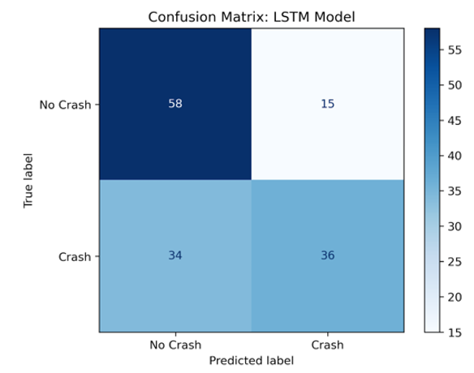
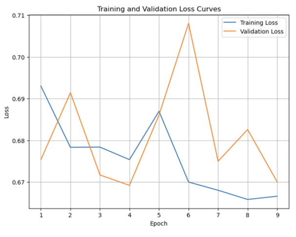
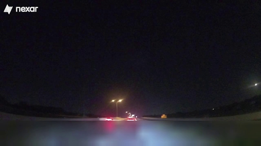
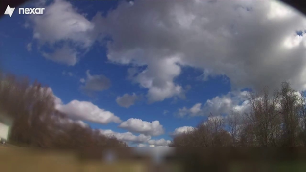
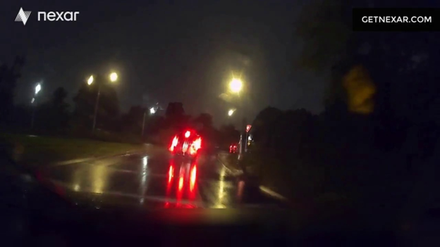
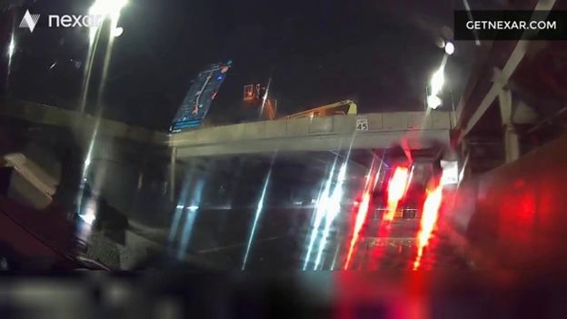
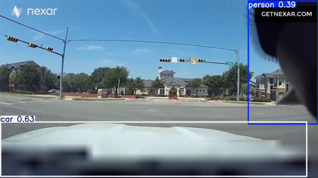

Results
Long Short-Term Memory:
As seen in Figure 1, the LSTM model showed moderate performance, achieving a classification accuracy of approximately 66%. This means that just under two-thirds of the dashcam videos were correctly classified. With a precision of about 70.6%, the model was reasonably accurate when predicting crashes, which is beneficial in minimizing false alarms in safety-critical applications. However, its recall was lower at 51.4%, indicating that nearly half of the actual crash videos went undetected. This shortfall is significant, as failing to recognize real crashes poses serious risks in real-world deployment. The F1 score of 59.5% reflects the imbalance between precision and recall, suggesting that while the model avoids over-predicting crashes, it struggles to consistently detect them. Despite these limitations, the LSTM model demonstrates reasonable promise, but improving its sensitivity would be a necessary task for deployment in scenarios where missed detections can have significant consequences.
The training process involved monitoring both training and validation loss curves over multiple epochs to optimize the model. The best-performing model leveraged the following hyperparameters: a hidden size of 128, a dropout rate of 0.2, a learning rate of 0.001, three hidden layers, and the Adam optimizer.


Gated Recurrent Unit:
Our GRU model delivered the strongest performance among all models tested in this study. As seen in Figure 4 (confusion matrix), it delivered a moderate performance in the classification task. It achieved an accuracy of 68%, indicating that just over two-thirds of all video segments were correctly labeled. The model also produced a precision of 73%, suggesting that when it predicted a crash, it was correct nearly three-quarters of the time. This high precision is important in safety-critical systems, where false positives can trigger unnecessary interventions. However, the recall rate of 66% reveals a key limitation: the model failed to detect approximately one-third of actual crash cases, which could be critical in real-world deployment where missing a true collision has severe consequences. The F1 score of 69% reflects a reasonable trade-off between precision and recall, signaling moderate overall effectiveness.
Compared to the Transformer and LSTM models, GRU’s gated architecture may have been better suited for modeling the temporal dependencies in our sequential YOLO-extracted object data. Its performance indicates that while recurrent structures like GRU can capture meaningful dynamics in video sequences, there is still room to enhance recall. Overall, the GRU’s results demonstrate promise for sequence-based collision prediction tasks, but they also highlight the importance of improving sensitivity to ensure critical crash events are not missed.
Transformer:
Our transformer model achieved somewhat disappointing results when applied to the crash-no-crash task. For the classification metrics, the model yielded an overall accuracy of 58%, a precision of 59%, a recall of 53%, and an F1 score of 56%. As seen in figure 5, the model was able to better capture instances of non-crash sequences than sequences containing crashes. We believe that this slight under-sensitivity to true crash events may have resulted from the inherent class imbalances in the dataset. As for the model’s training dynamics, the whole process ran very smoothly: both the global average train and validation losses seen in figure 6 plummeted in the first two epochs and began to converge to a BCE value of around 0.6931, with almost no gap between them. While training dynamics were healthy, our convergence value corresponds to a binary classification accuracy of around 50% - meaning our model could not improve beyond a random guess. This suggests that despite stable optimization, our current feature representation and model architecture lack the predictive power needed to reliably detect crash events in dashcam video.
Conclusion & Future Work
In this study, we explored the use of sequential deep learning models, specifically LSTM and GRU networks, to classify driving dashcam footage as either containing a vehicle collision or not. By leveraging temporal patterns across video frames, our models partially captured motion cues and abrupt transitions often associated with collision events. The results demonstrate that sequence-based neural networks are somewhat capable of learning temporal dynamics from raw video data and temporal object features, providing a promising baseline for video-based automotive incident detection. This research contributes to the growing field of AI-assisted driver safety systems by demonstrating that temporal models can meaningfully interpret dashcam footage to detect critical events such as collisions. Real-time classification systems can play pivotal roles in post-accident analysis, autonomous vehicle decision-making, and insurance claim verification.
Limitations:
As reflected in our mostly moderate results, this study encountered several key challenges. One major limitation was visual obstruction in the dashcam footage caused by close-up objects, motion blur, poor camera angles, or climate-related distortions. These issues significantly impaired the performance of the pretrained YOLO object detection model, which ultimately reduced the quality of input data for the sequential neural networks. In some cases, even when there were no physical obstructions, the YOLO model misclassified objects, further degrading the input data quality. Consequently, the system occasionally failed to detect critical objects involved in actual collisions or mistakenly flagged non-threatening scenarios as crashes. Additionally, the majority of the collision videos featured only minor fender benders, meaning the visual cues for collision can be extremely subtle. This made it especially difficult for the model to distinguish low-impact incidents from regular traffic behaviors, such as a vehicle coming to a stop at a red light.
Poor Camera Angles


Weather Conditions


YOLO Misclassifications

Future Directions:
To address these limitations and push this work toward real-world deployment, several future directions are proposed:
3D Motion Modeling: Integrating optical flow analysis, or estimating object velocities through pixel movement between frames, could provide better motion-based context beyond just features extracted from raw frames. This would hypothetically allow the model to better understand sudden movements and forceful impacts, both characteristic of collisions.
Multi-Modal Sensors: Extending the model to incorporate additional sensor inputs, such as GPS, LiDAR, accelerometers, gyroscopes, or vehicle telemetry, could offer complementary information, improving classification under conditions considered ambiguous with just dashcam footage.